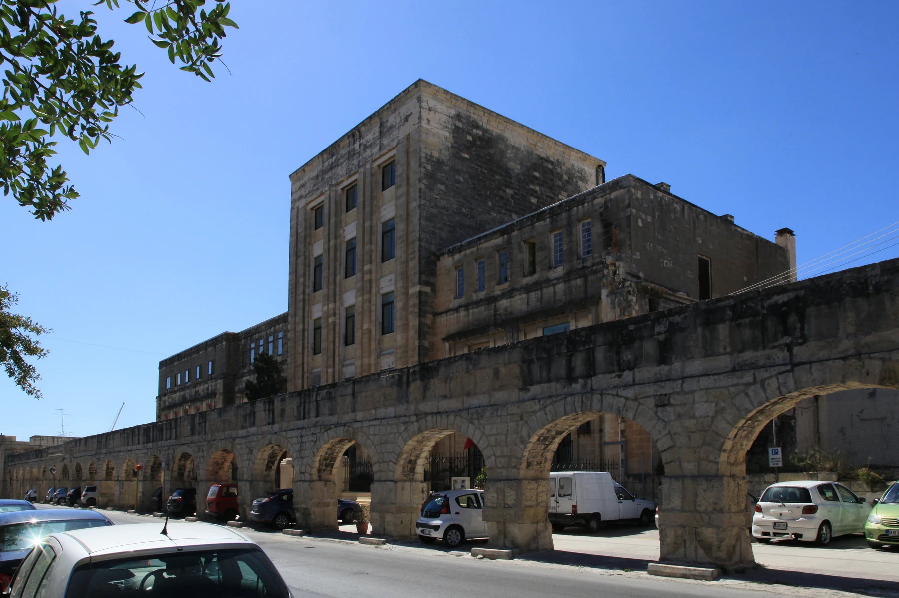

Building age, internal light, stairs, pavement width, street activity and parking conditions vary. Confirm each one at the exact entrance and viewing time.
SANTA VENERA · START WITH THE ADDRESS
Stone arches. Lived-in streets.
Santa Venera pairs established residential streets with the Wignacourt Aqueduct, Casa Leoni and Romeo Romano Garden. Its position between larger neighbouring towns makes exact address context more useful than a single neighbourhood shorthand.

ONE LOCALITY, THREE READING CONTEXTS
The real street comes first.
The Local Council places Santa Venera between Birkirkara, Ħamrun and Qormi. That central position helps explain its connected street pattern; it does not make neighbouring addresses interchangeable or guarantee that every listing sits by a landmark or on a quiet residential lane.
The aqueduct, Casa Leoni and Romeo Romano Garden create a recognisable heritage context. Their presence never proves a listing’s view, access or walking route.
Some edges carry through-movement between larger towns. Do not generalise present noise, traffic, air, parking or roadworks from the locality name or a dated photograph.
Water infrastructure became part of the townscape.
The Local Council dates the Wignacourt Aqueduct to 1611–1615 and Casa Leoni to around 1730. It also connects the nearby public garden with an old water mill, agricultural tools and a farmhouse. These are historical anchors, not promises of current entry, condition or events.
Santa Venera Local Council ↗Romeo Romano is a real activity anchor.
Parks in Malta describes a 4,000-square-metre garden with a playground, citrus trees, a restored water mill and accessible pathways. Current opening, maintenance, facilities and event access should still be checked on the day.
Parks in Malta ↗OPERATOR-BACKED EXAMPLES
Everyday, food and activity anchors without a “best of” list.
These examples make the guide useful without turning it into a ranking. They are not a complete directory or a promise of live stock, menus, prices, opening hours, delivery, parking, accessibility or distance from a property.
Lidl locality record
Lidl Malta’s own site includes Santa Venera among its store localities. Use that only as a broad operator-backed shopping example; confirm the precise store and current arrangements directly.
Operator source ↗PANINA
The operator identifies a Santa Venera outlet on Cannon Road serving quick lunches, coffee and ftira. Awards, promotional rankings and fixed opening claims are deliberately omitted.
Operator source ↗House of Flavors
The operator publishes its address at 400 Triq il-Kbira San Guzepp and a menu covering breakfast, snackery and ftira. Check today’s menu, booking and access directly.
Operator source ↗Romeo Romano Garden
The current park page lists playground, picnic and walking facilities. Treat access, hours and amenities as live operational details rather than permanent property-copy promises.
Park source ↗Public-service wording needs an extra layer of care.
Primary HealthCare lists St Venera within Floriana Health Centre’s catchment. The same page still carries a legacy Covid-19 closure line for the Marsa/St Venera peripheral clinic, so this guide makes no claim that a local clinic or a particular service is currently operating. Confirm services, referrals and hours directly.
No overview line becomes a journey.
This edition draws no municipal boundary, generic walking route, road ETA, bus timetable, taxi price or ferry. Walking geometry, bus schedules, current car-traffic estimates and taxi-price observations are separate sources requiring exact endpoints, mode and timestamp. No ferry is assumed for Santa Venera.
Load the residential and heritage context only when useful.
The broad frame keeps Santa Venera’s centre and the aqueduct–Casa Leoni–Romeo Romano group legible while showing neighbouring edges only for orientation. It draws no boundary, property route or journey time. OpenStreetMap loads only after your click.
Santa Venera Local Council · Primary HealthCare · Parks in Malta · Lidl Malta · PANINA · House of Flavors · Wikimedia Commons image record

No ranking, permanent opening, property-specific route, guaranteed outlook, parking claim, accessibility promise or journey time is claimed. Birkirkara, Ħamrun and Qormi remain separate property-search and municipal contexts.